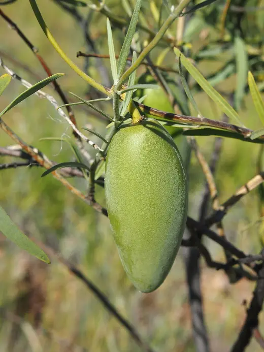

Wild fruit · Apr–Sep
Bush banana
Marsdenia australis
Also called Bush banana
Bush banana is a wild fruit you can forage from April to September in Arid centre. Desert vine climbing through shrubs, with long narrow leaves and green pear-shaped fruit.

When is bush banana in season in Australia?
Bush banana is usually in season April to September. Timing shifts with weather, latitude and altitude.
Where does bush banana grow in Australia?
Bush banana grows in Northern Territory, Queensland, South Australia, Western Australia. Regions: Arid centre.
How do you recognise bush banana?
Desert vine climbing through shrubs, with long narrow leaves and green pear-shaped fruit.
How do you harvest bush banana?
Pick only fully ripe fruit that comes away easily, into a shallow container so it doesn't crush. Leave plenty on the plant for birds and wildlife.
How do you eat bush banana?
Young fruit eaten raw or roasted, tasting like peas; flowers and leaves cooked too.
How do you store bush banana?
Best fresh.
What is bush banana good for?
Vitamin C, Calories.